The Hitchhiker's Guide to Monero
Monero (XMR) is a privacy-oriented cryptocurrency that provides a high degree of security and anonymity to its users.
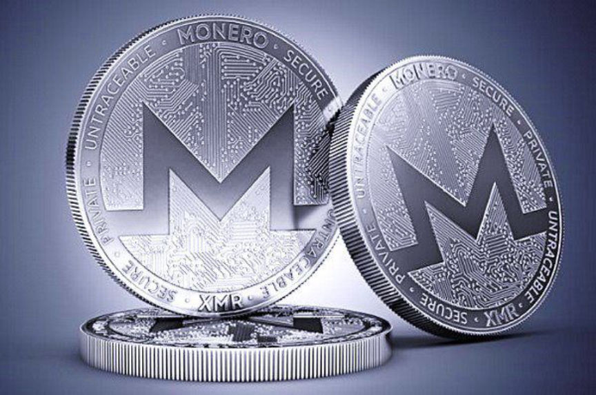
Monero secures its users financial privacy by making every user anonymous by default. To conceal the identity of the sender, recipient, and amount transferred in a transaction, Monero uses advanced privacy technologies such as ring signatures, stealth addresses, and Ring Confidential Transactions (RingCT).
A stealth address is a privacy-enhancing feature in Monero that hides where the funds are going. To receive funds, the recipient shares their public address. When a sender wants to send funds to the recipient, they create a unique, one-time address (stealth address) that is derived from the recipient's public address and the transaction information.
The unique address is then used to receive the funds, making it impossible for third parties to determine the connection between the transaction and the recipient's public address.
The recipient can use the same public address in multiple transactions. In each transaction, the funds go to a unique address. And no transaction can be linked to the recipient's public address or the other transactions.
Stealth Addresses ensure the destination of the funds is only known by the sender and recipient.
In Monero, a ring signature allows a group of users to sign a transaction, such that it is unclear which of the users actually signed the transaction. When you initiate a transaction, your keys and several public keys pulled from the blockchain are put together to form a ring of possible signers. It becomes difficult for third-party observers to determine the identity of the actual signer.
RingCT was an upgrade from Ring signatures. RingCT allows the sender and receiver to hide the amount transferred in a transaction. In Ring signatures, for the ring to work the outputs had to be of a common denomination. In RingCT, the transaction amount is hidden. And the need for a set denomination to make rings was eliminated and privacy was enhanced.
We will now look into how you can self-custody and use Monero to protect your financial privacy.
The following is a step-by-step guide to help you set up and use the Monero GUI wallet:
Go to the official Monero website and download the Monero GUI wallet for your device.
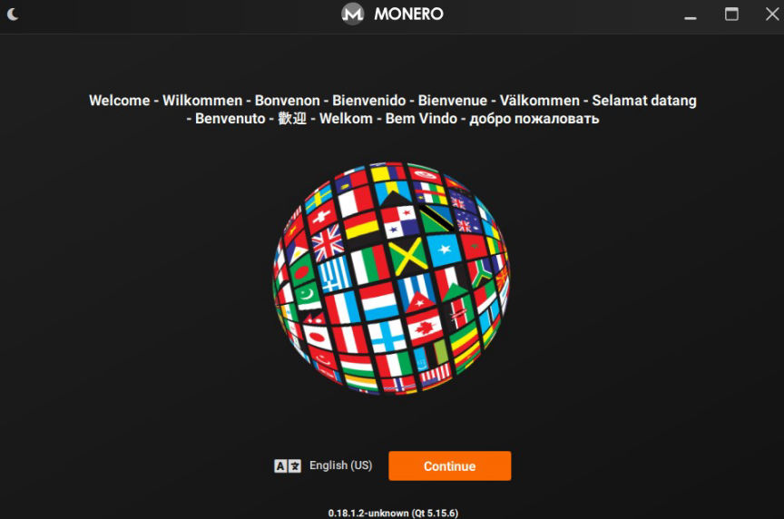
Install the wallet, run it, and select your language.
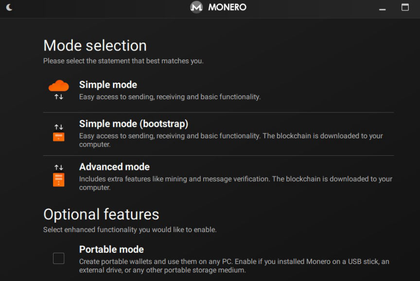
In this guide, we are going to focus on creating a wallet that you can use as fast as possible. So select Simple mode, check the box and click next.
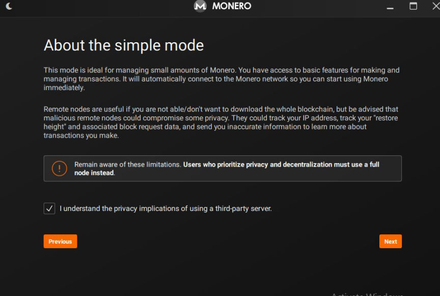
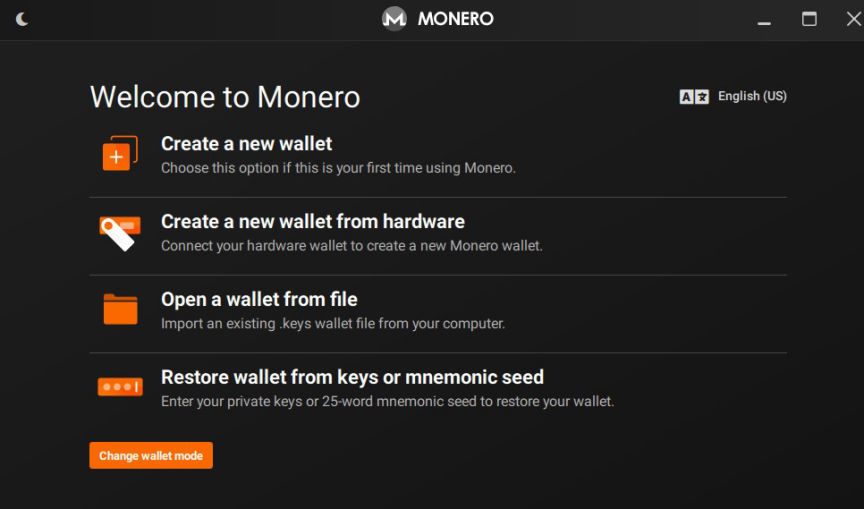
Click on Create a New Wallet.
Give your wallet a name, write down the seed phrase, and keep it somewhere safe. You will use your seed phrase to recover your wallet in case you forget your password. Also, write down the wallet restore height to make your wallet restoration process easier. Click next to continue.
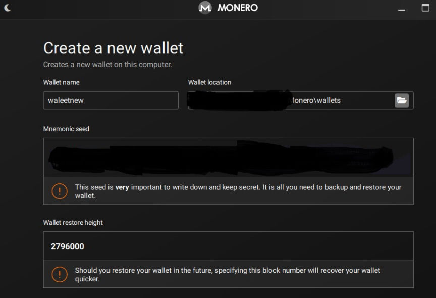
Give your wallet a strong password.
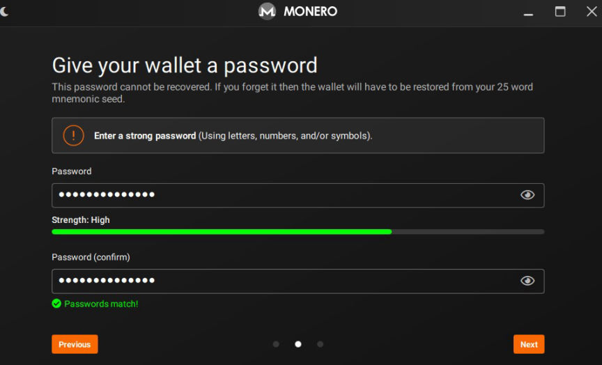
Click next and confirm your wallet details before clicking on the create wallet button.
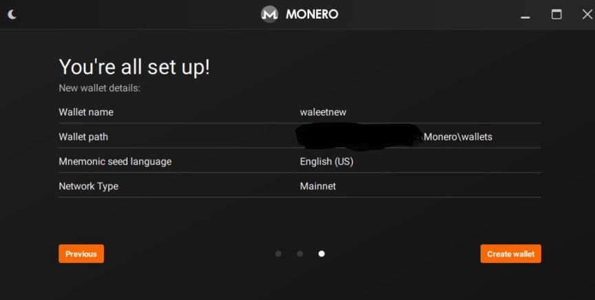
Wait for your wallet to complete the synchronization.
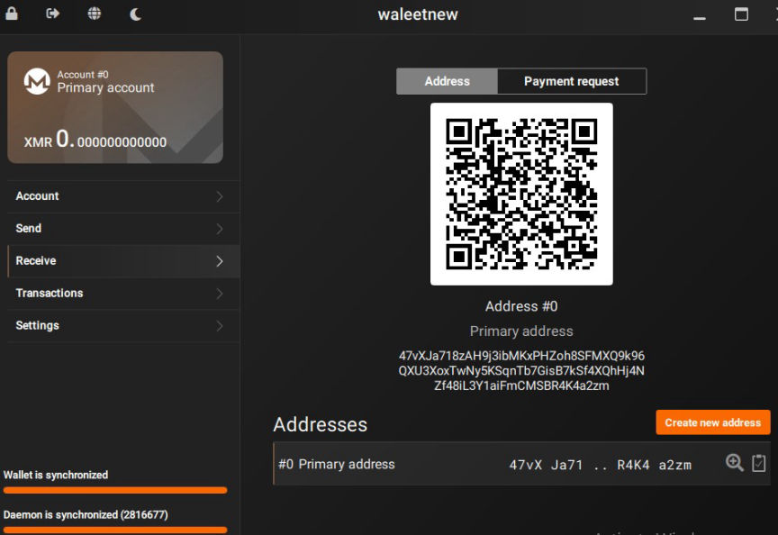
To receive Monero, click on the Receive tab and copy your wallet address. You can give the address to the sender or send Monero to the wallet from an exchange.
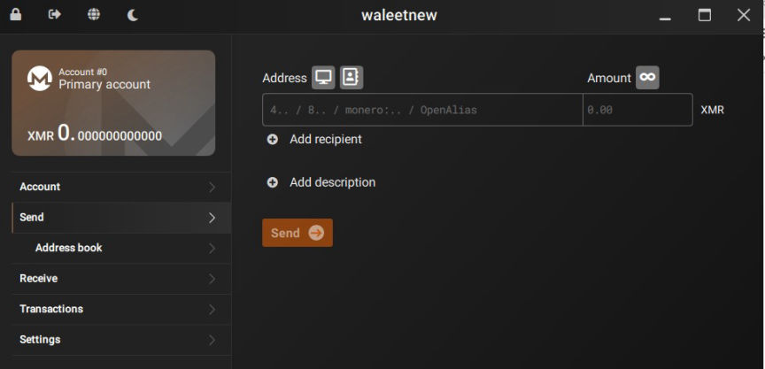
To send Monero, click on the Send tab, enter the recipients address and the amount you want to send, and confirm the transaction by entering your password.
This guide provides a basic overview of the Monero GUI wallet. If you are interested in achieving maximum privacy, you should select advanced mode when creating your wallet. Advanced mode will allow you to connect custom remote nodes including, onion remote nodes.
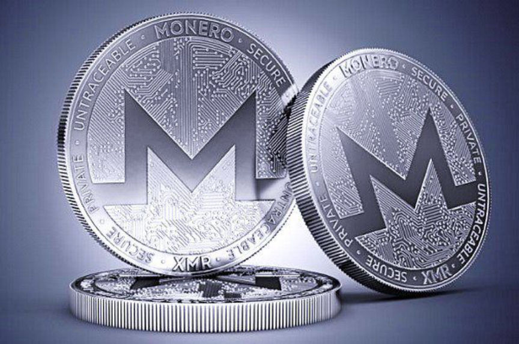
Monero
Monero secures its users financial privacy by making every user anonymous by default. To conceal the identity of the sender, recipient, and amount transferred in a transaction, Monero uses advanced privacy technologies such as ring signatures, stealth addresses, and Ring Confidential Transactions (RingCT).
Stealth Addresses
A stealth address is a privacy-enhancing feature in Monero that hides where the funds are going. To receive funds, the recipient shares their public address. When a sender wants to send funds to the recipient, they create a unique, one-time address (stealth address) that is derived from the recipient's public address and the transaction information.
The unique address is then used to receive the funds, making it impossible for third parties to determine the connection between the transaction and the recipient's public address.
The recipient can use the same public address in multiple transactions. In each transaction, the funds go to a unique address. And no transaction can be linked to the recipient's public address or the other transactions.
Stealth Addresses ensure the destination of the funds is only known by the sender and recipient.
Ring signatures and RingCT
In Monero, a ring signature allows a group of users to sign a transaction, such that it is unclear which of the users actually signed the transaction. When you initiate a transaction, your keys and several public keys pulled from the blockchain are put together to form a ring of possible signers. It becomes difficult for third-party observers to determine the identity of the actual signer.
RingCT was an upgrade from Ring signatures. RingCT allows the sender and receiver to hide the amount transferred in a transaction. In Ring signatures, for the ring to work the outputs had to be of a common denomination. In RingCT, the transaction amount is hidden. And the need for a set denomination to make rings was eliminated and privacy was enhanced.
We will now look into how you can self-custody and use Monero to protect your financial privacy.
The following is a step-by-step guide to help you set up and use the Monero GUI wallet:
Download and Install the Monero GUI wallet
Go to the official Monero website and download the Monero GUI wallet for your device.
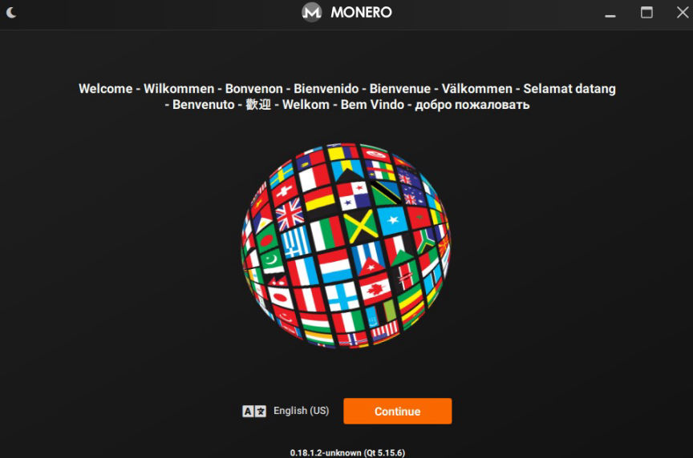
select your language
Install the wallet, run it, and select your language.
Choose wallet mode
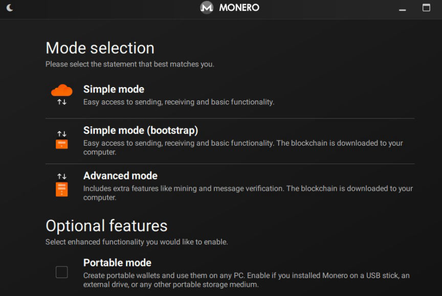
Mode Selection
In this guide, we are going to focus on creating a wallet that you can use as fast as possible. So select Simple mode, check the box and click next.
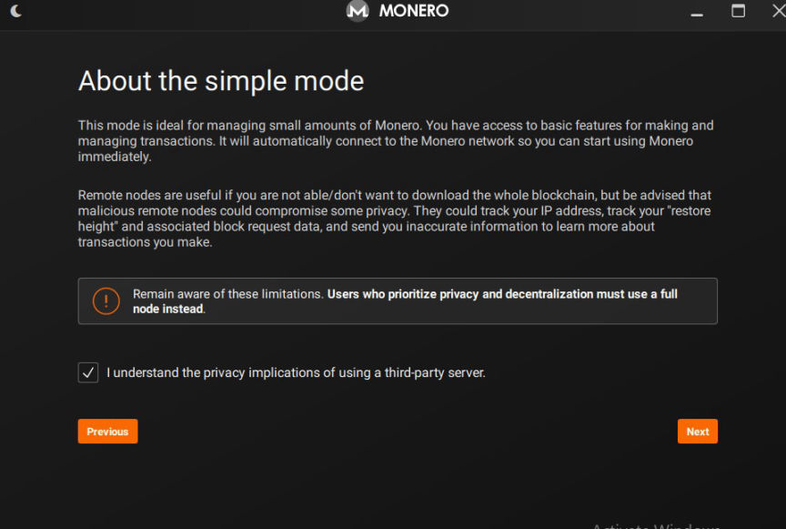
Simple Mode
Create Wallet
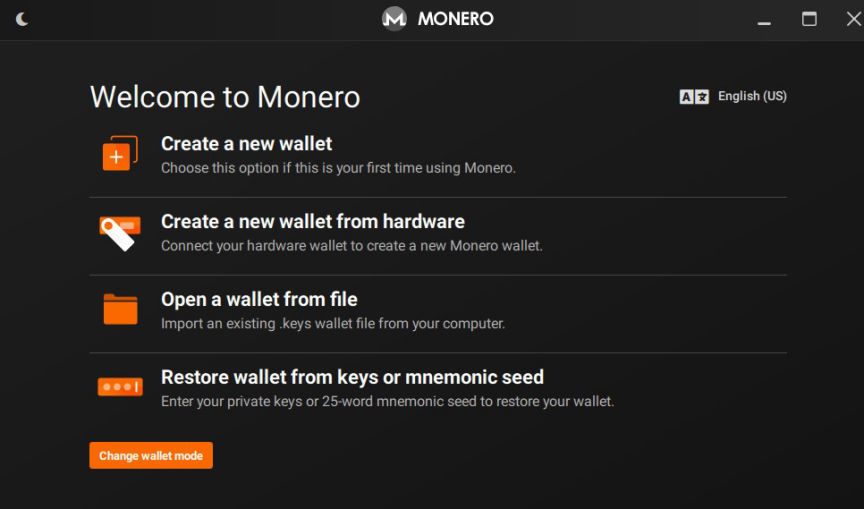
Wallet creation options
Click on Create a New Wallet.
Give your wallet a name, write down the seed phrase, and keep it somewhere safe. You will use your seed phrase to recover your wallet in case you forget your password. Also, write down the wallet restore height to make your wallet restoration process easier. Click next to continue.
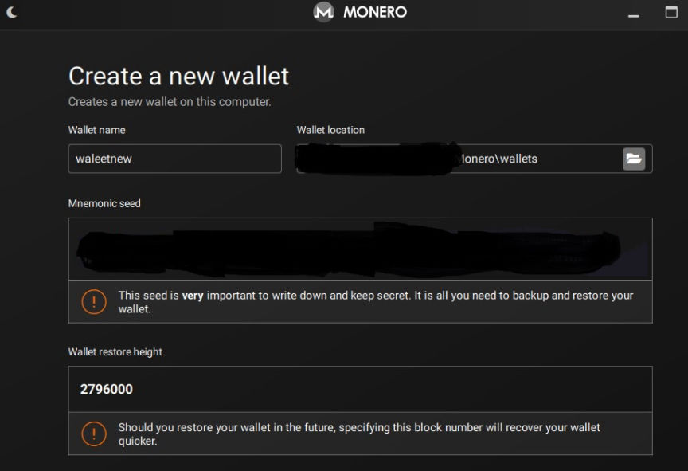
seed phrase for your new wallet
Give your wallet a strong password.
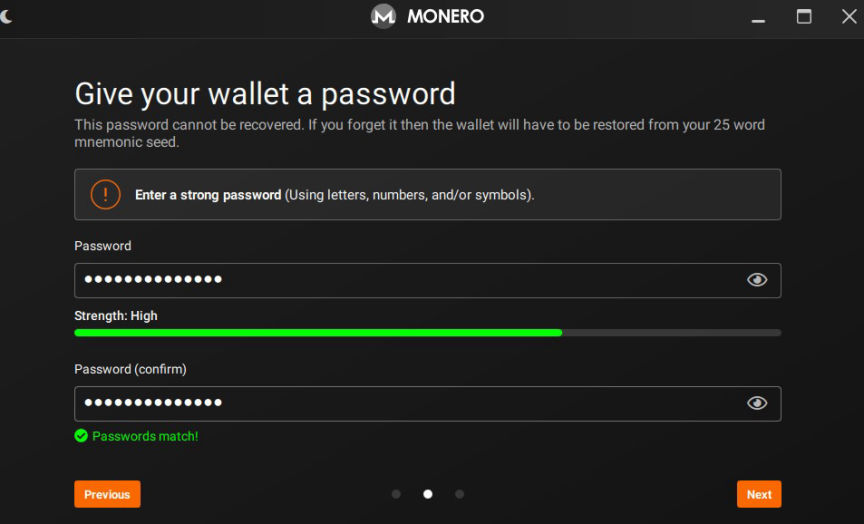
Creating a strong password for your new wallet
Click next and confirm your wallet details before clicking on the create wallet button.
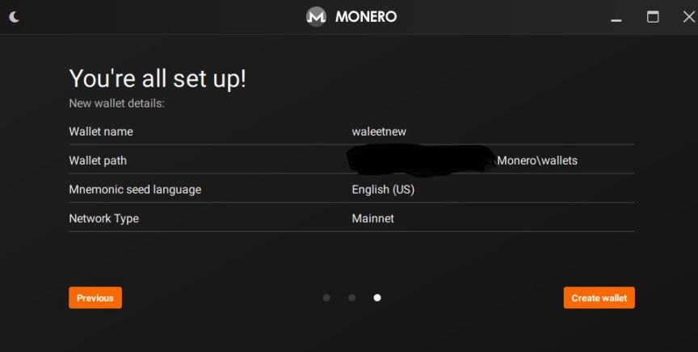
Confirming your wallet's info
Wait for your wallet to complete the synchronization.
Receive Monero
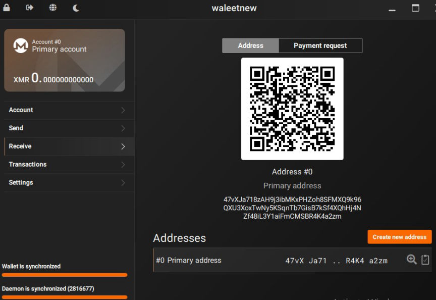
How to receive Monero
To receive Monero, click on the Receive tab and copy your wallet address. You can give the address to the sender or send Monero to the wallet from an exchange.
Send Monero
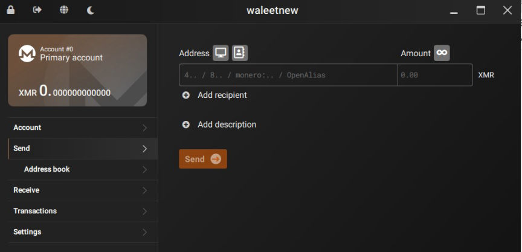
How to Send Monero
To send Monero, click on the Send tab, enter the recipients address and the amount you want to send, and confirm the transaction by entering your password.
This guide provides a basic overview of the Monero GUI wallet. If you are interested in achieving maximum privacy, you should select advanced mode when creating your wallet. Advanced mode will allow you to connect custom remote nodes including, onion remote nodes.